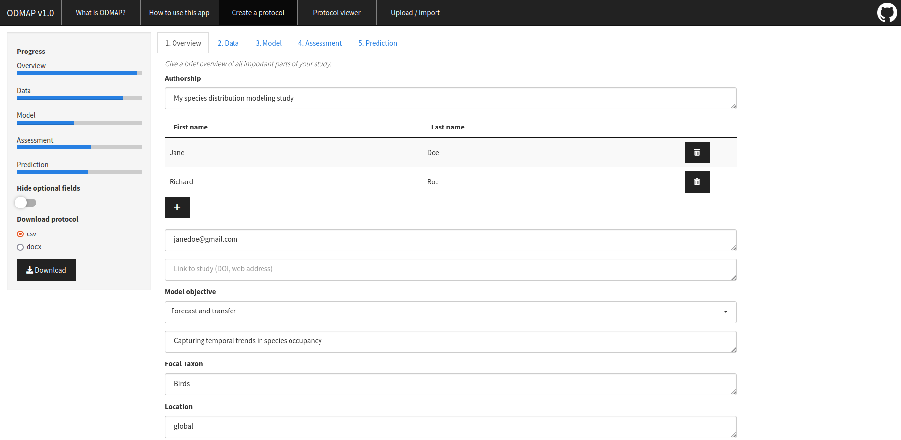

Web applications with R-Shiny
Shiny allows building interactive web applications from R while having access to all the tools that set the language apart, i.e. advanced data processing, modeling and visualization capabilities and thousands of user-contributed packages.
During my postdoc, I was part of the ODMAP project to promote better documentation and reporting of biodiversity models. ODMAP stands for Overview, Data, Model, Assessment and Prediction and provides a step-by-step protocol to ensure a reproducible modeling workflow. To support the adoption of the approach in the scientific community, I developed a Shiny web application where users can create, edit and and export an ODMAP protocol of their own study. The app interfaces with other relevant packages to assist user input and has contributed considerably to ODMAP’s great scientific impact.
In an upcoming project, I will use Shiny to build a data conversion tool where users can upload vegetation data in various file formats, e.g. as .csv, .xslx or Turboveg database, and convert them into a standardized XML format defined by the VegX standard.